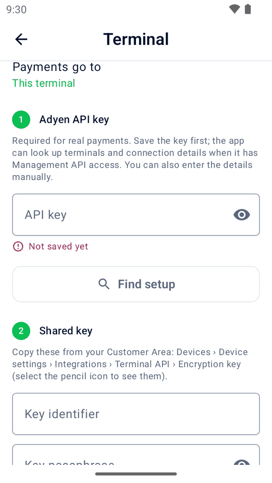

Guide
Getting started
Choose your setup, install the app and connect to Adyen. Start in TEST, then check your setup before taking real payments.
Try it first—no account needed
On first launch, choose Try simulator with samples, Set up from another device to import a setup QR code, or Set up a terminal. The simulator choice adds example products and read-only demo history without an Adyen account. Sample history and its receipts are labeled as demos and do not count in day totals.
In Settings › Data, use Add sample data or Remove sample data. Removal includes edited sample products, but keeps your own products, history, tax rates and settings, and any sample category your products use. Adding samples here does not change the payment destination.
Download minimpos-<version>.apk from the latest release and open it on an Android phone or emulator (Android 9 or later). Allow installation from your browser or file manager when Android asks.
Away from an Adyen terminal, Mini mPOS starts with the simulator. No card is charged. In Settings › Simulator, choose approved, declined, busy or timed-out results, the delay and whether a printer is available. Simulated receipts appear on screen; deposits, tips and captures can be tried too. For offline demo links, see payment links.
Building from source? Follow the contributor guide.
Choose your setup
The device runs Mini mPOS; the terminal takes the card. They can be the same device.
- On an Adyen terminal
- The complete checkout on one device. Use an Adyen Android terminal running Android 9 or later, such as S1F2, S1F4Pro, S1E4Pro, S1E2L, AMS1, S1U2 or SFO1.
- Tablet or phone with a network terminal
- The recommended tablet setup at a counter. The Android 9+ device and terminal must be on the same network. Mini mPOS need not be installed on that terminal.
- Tablet or phone with a cloud terminal
- For devices and terminals on different networks. Payments reach the terminal through Adyen's Cloud device API.
- Tap to Pay on a phone
- No separate terminal. Requires a Google-certified NFC phone with Android 12 or later, the Adyen Payments app and activation by Adyen Support. Check Adyen's requirements and supported countries and payment methods.
Printing needs a terminal with a printer. Scanning barcodes, receipts or setup codes needs a camera. Tap to Pay has no printer; email or share receipts instead.
Mini mPOS is independent, not made, endorsed or supported by Adyen. For real payments you need an Adyen account with the relevant payment services enabled, Customer Area access and Checkout API credentials. Follow Adyen's linked documentation for account and platform procedures.
Install the app
Use the signed APK from the latest release for every setup.
- Adyen terminal: upload and deploy it through the Customer Area, following Adyen's app deployment guide. Your user must be able to upload and deploy apps.
- Tablet or phone: open the APK on the device and allow installation. There is nothing to deploy through Adyen.
Keep the same signing source for updates: a terminal accepts later versions only when signed with the same key. To build and sign your own, see the contributor guide.
Connect to Adyen
Follow only your setup below. Open Settings › Terminal for Quick setup by QR code. For manual entry on a tablet or phone, choose Payments go to. The numbered steps in the app show what you need; Home lists anything still missing.
Prepare the credentials
In Developers › API credentials, create a credential and generate its API key; see Adyen's credential guide. The Checkout webservice role is assigned by default. Add only the extra roles your setup uses:
- Cloud Device API role: required for cloud payments.
- Management API — Terminal actions read: optional automatic terminal lookup, including the account and last reported network addresses.
- Management API — Terminal settings read: optional shared-key settings lookup for this terminal or a network terminal.
- Management API — Terminal settings Advanced read and write: optional shared-key passphrase lookup for those destinations.
For this terminal, a network terminal or Tap to Pay, also prepare a shared key: identifier, passphrase and version, from Devices › Device settings › Integrations › Terminal API › Encryption key. See Adyen's local integration guide. Cloud setups do not use this key.
For a network or cloud terminal, Environment is step 1: choose TEST for test cards or LIVE for real payments. Use a terminal, account and credentials from that environment. Mini mPOS does not try an API key in the other environment. On an Adyen terminal it reads the device's verified certificate instead; with Tap to Pay it uses the installed Payments app.
For physical terminals, tap Save and find setup under Adyen API key to save it encrypted and look up terminals in that environment. Mini mPOS only reads settings; it never creates or changes keys at Adyen. See Adyen's terminal list and terminal settings API references. If a read is denied, unavailable or incomplete, the API key stays saved and you can enter the missing details manually. Management permissions are not required for manual setup. Review any retrieved address: it may be stale. Tap to Pay saves the key without looking up physical terminals.

Enter keys from a computer
Open the setup helper on a trusted computer and choose your destination and TEST/LIVE. Automatic (recommended) asks for the API key; the device finds the terminal's account, address and shared key when lookup permissions allow. Choose a terminal on a phone or tablet and review the result. Manual asks for all connection details on the computer. Both modes require the live URL prefix for LIVE. Tap to Pay uses manual shared-key entry; installation and phone registration still happen on the device. See its setup steps.
You can also include optional SMTP settings for email receipts. See email setup for provider requirements. After importing, review Settings › Email and send a test email.
Click Make QR codes. In the app, open Settings › Terminal and tap Scan setup codes or the top-right QR scan icon. No destination or environment choice is needed first. Scan all codes, review the destination and environment, enter the transfer code and tap Import. Tap Continue setup for Automatic, or Review setup for Manual. Supplied details start collapsed; tap a step to review or edit them. Enter anything missing and test the connection and API key below. If lookup is unavailable, the imported key stays saved; use the device's fields or Manual in the helper. You can also enter everything directly in Settings › Terminal.
On an Adyen terminal
First install the app and prepare the credentials.
- Setup helper (recommended)
- On a trusted computer, open the setup helper and choose On an Adyen terminal, the terminal's TEST/LIVE environment and Automatic. Fill in the Adyen API key and, for LIVE, the live URL prefix. Follow the QR import steps, then tap Continue setup on the terminal. Mini mPOS matches this terminal and looks up its merchant account and shared key when permissions allow. Review the details, enter anything missing, then test the connection and API key. Choose Manual in the helper to fill in the details yourself.
Manual
- In Settings › Terminal › Adyen API key, save your key. The app reads this device's certificate to determine TEST/LIVE without a shared key. When lookup access is available, it matches this terminal and fills its merchant account and shared-key details.
- Review or enter the shared key and tap Test connection (or Save and test for a typed passphrase). The address and POIID are detected on the device.
- Review or enter the merchant account under Checkout API, then tap Test API key.
With a terminal on your network
First install the app and prepare the credentials.
- Setup helper (recommended)
- On a trusted computer, open the setup helper and choose a tablet or phone with a terminal on the same network, the terminal's TEST/LIVE environment and Automatic. Fill in the Adyen API key and, for LIVE, the live URL prefix. Follow the QR import steps, then tap Continue setup and choose a terminal on the device. Review its POIID, merchant account, IP address and shared key, enter anything missing, then test the connection and API key. Choose Manual in the helper if lookup is unavailable or you prefer to fill in the details yourself.
Manual
- Select A terminal on your network. In step 1, Environment, choose TEST or LIVE to match the terminal.
- Save the Adyen API key from that environment and choose a terminal from the lookup, when available.
- Review its POIID, merchant account, IP address and shared key. Enter any missing details manually; the terminal's Device info screen shows its current address and POIID.
- Test the shared-key connection, then review the merchant account under Checkout API and tap Test API key.
The connection verifies that the terminal's certificate matches your choice. A mismatch is rejected, not changed automatically.
With a terminal over the internet
First install the app and prepare the credentials.
- Setup helper (recommended)
- On a trusted computer, open the setup helper and choose a tablet or phone with a terminal over the internet (cloud), the terminal's TEST/LIVE environment and Automatic. Fill in the Adyen API key with the Cloud Device API role and, for LIVE, the live URL prefix. Follow the QR import steps, then tap Continue setup and choose a terminal on the device. Review the merchant account and POIID, enter anything missing, then tap Test connection to test both the terminal and Checkout API. Choose Manual in the helper to fill in the details yourself.
Manual
- Select the cloud destination. In step 1, Environment, choose TEST or LIVE to match the terminal.
- Save the Adyen API key from that environment with the Cloud Device API role. Choose a terminal from the optional lookup, when available.
- Review or enter the merchant account under Adyen account. For LIVE, also enter the Checkout live URL prefix.
- Review or enter the terminal's POIID and tap Test connection to test both the terminal and Checkout API.
The app finds the data center within the selected environment. Cloud payments can wait longer for the terminal than local payments.
With Tap to Pay
Tap to Pay on Android requires Adyen to enable the service and the Adyen Payments app role for your company. Contact Adyen Support before proceeding.
First install the app and prepare the credentials.
- From Google Play, install Adyen Payments Test for TEST or Adyen Payments for LIVE, not both.
- In Mini mPOS, open Settings › Terminal and select Tap to Pay on this phone.
Choose how to enter the credentials from the installed Payments app's environment:
- Setup helper (recommended)
- On a trusted computer, open the setup helper and choose Tap to Pay and the matching TEST/LIVE environment. Fill in the Adyen API key, merchant account and separate Payments app API key. Enter the shared key here or later on the phone. For LIVE, include the live URL prefix; optionally include a store ID. Follow the QR import steps, then tap Review setup on the phone.
Manual
In Settings › Terminal, save the Adyen API key. Under Checkout API, enter the merchant account and, for LIVE, the live URL prefix. Under Tap to Pay, save a separate Payments app API key with only the Adyen Payments app role and optionally enter a store ID (not its reference). Enter the shared key's identifier, passphrase and version under Shared key.
For either option, tap Test API key, then Set up Tap to Pay and complete registration in the Payments app. Use the same merchant account for Checkout and phone registration.
Mini mPOS does not look up the Tap to Pay shared key. Enter it in the helper or on the phone, then test the connection. Saved details start collapsed during helper-guided setup; tap a step to review or edit them.
Mini mPOS performs the boarding flow in Adyen's Payments app guide: it checks registration, requests a one-time boarding token and sends it to the Payments app. You do not need to copy boarding tokens. The Payments app API key authorizes registration; the separate Adyen API key supports Checkout operations. The shared key encrypts payment messages, as Adyen requires; boarding does not replace it.
Payments open the Payments app and return to Mini mPOS. The installed app determines TEST or LIVE. To deregister the phone later, use Remove this phone.
API keys are encrypted on this device. Adyen recommends keeping them on a server; Mini mPOS has none. Use narrowly scoped credentials dedicated to the device or terminal fleet, set an admin PIN and revoke exposed or lost-device credentials. Read the security policy.
Make your first TEST payment
- Check Settings › Terminal: the selected or detected environment should be TEST. Finish the connection and API checks.
- In Settings › Payments, check the currency your Adyen account accepts. In Settings › Tax, check your rates and whether prices include tax.
- Tap New sale, enter a custom amount and proceed to checkout. Tap Pay and use Adyen's test cards.
- Check the result, receipt and History entry. Try a refund too. If the result is unknown, follow the recovery instructions before trying another payment.
Next, use Using Mini mPOS to add products, customize receipts, set staff permissions and enable the workflows you need.
Before taking live payments
- Test every workflow you plan to use, including deposits, tips and payment links. A simulator run is not a substitute for testing with Adyen.
- Print a physical test receipt where a printer is available, and send a test email if you use email receipts.
- Set an admin PIN and, if needed, a separate Manager PIN. Review business settings.
- Use the LIVE terminal or Payments app and its LIVE credentials. For a network or cloud terminal, select LIVE in step 1. Checkout needs your live URL prefix from Developers › API URLs; see Adyen's live endpoints. This field appears once LIVE is selected or detected.
- Run the connection and API checks, then confirm LIVE in Settings › Terminal. The setup helper imports your environment choice for network and cloud terminals; it cannot override an Adyen terminal's certificate or the installed Payments app.
Need help? Go to Troubleshooting.